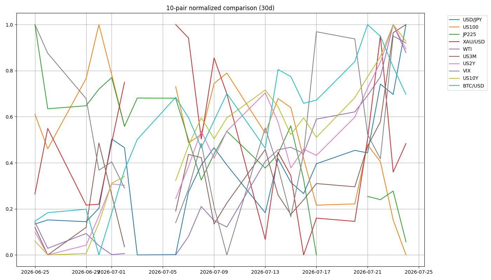

📉 CFD戦略ブリーフ — 7/27週
対象週: 2026-7-24_wk04（データ期間 2026-07-20→07-24 / snapshot 2026-07-25） ｜ ソース: review・meta・snapshot・boss(wr-2026-7-24＝答え合わせ形式)・--trade --news ｜ CFD正本: 1.5Lot持越し継続 / $3,950ネック未割れ→日足実体上抜け
Regime: Equities Down / Oil Surge（内部3項目が転換）
Add risk gate: 閉鎖継続（VIX 18.58>18・2週連続）
Reduce: caution（金利上抜け/28,173割れ/165介入/VIX20で発火）
機械=30日ラベル / boss=金曜の骨格転換 → 時間軸差として両論併記
⚠️ WTI ソース乖離（創作補完なし）：機械snapshot 89.310（30日+24.18% → oil=surge 判定）vs Boss 1次の金曜引け 85.15（-2.14%・高値87.25/安値83.80）。
regimeラベルの "Oil Surge" 部分はこの乖離に依存し、85.15で30日変化を引くと約+18%＝range相当。ラベルを鵜呑みにせず両論併記で扱う。原因は本セッションで特定できないため断定しない。
1. 10ペア 30日スナップショット
| 銘柄 | 最新 | 30日% | wk03→wk04 |
|---|
| US100 | 28,128.34 | -4.46% | -464.3(-1.62%) |
| JP225 | 64,611.15 | -10.72% | +470.0(+0.73%) |
| USD/JPY | 163.791 | +1.25% | +1.438(52週高値164) |
| XAU/USD | 4,067.60 | +0.92% | +54.9(off→range) |
| WTI | 89.31 / Boss 85.15 | +24.18% | 乖離あり |
| US10Y | 4.679 | +6.53% | +0.138(52週高値4.714) |
| US2Y (真・Boss) | 4.331 | — | 52週高値4.366 |
| 5Y (^FVX) | 4.426 | +6.32% | +0.153(3点で最大) |
| US3M | 3.805 | +3.40% | +0.098 |
| VIX | 18.580 | -1.64% | -0.19(18超え継続) |
| BTC/USD | 64,098.50 | +7.33% | +199.0(range→strong) |
Boss実測（金曜引け）: NDX 28,128.34(-1.15%) / NYダウ 51,947.25(+0.46%) / S&P500 7,411.98(+0.05%) / 日経CFD 64,611.15(-2.73%) / ドル円163.85(高値163.97) / EURUSD 1.1368(安値引け) / Gold 4,070.80(+20.60・安値4,024) / BTC 63,845.8(-1.93%・安値63,800.5) / Brent 96.78(-3.88%)
10ペア30日 正規化プロット

2. レジーム & ゲート状況
機械レジーム
Equities Down / Oil Surge
equities=down / vol=normal / oil=surge / gold=range / crypto=strong / yields=rising
※wk03からラベル継続だが oil range→surge・gold off→range・crypto range→strong と内部3項目が転換
Add risk ゲート
閉鎖継続
VIX 18.58 > 18（2週連続）。18近辺の高止まり＝パニックではないが警戒解除でもない中間帯。再開＝VIX<18回帰＋NDX 28,173回復＋原油の乱高下一服（or US2Yピークアウト）
Reduce risk ゲート
caution
US10Y 4.714 or US2Y 4.366 上抜け / NDX 28,173明確割れ→28,000 / WTI 93.60超→96台 / USDJPY 164突破→165手前の介入フラッシュ / VIX 20超え定着 で発火
3. 金利カーブ 3点（front=政策 / belly=5Y / long=growth）
3m10s（主ゲージ・Fed重視）+87.4bp / positive（Δ+16.2）
5s10s（^FVX=5y proxy）+25.3bp / bear_steepening（Δ+2.4）
3m5s+62.1bp
belly_premium（5Yの瘤）+19.5bp ← wk03 +16.0bp から拡大
structurebelly_elevated（再利上げ織り込みの瘤）
★ 真の2s10s（Boss 1次）+34.8bp（4.679 − 4.331）
時間軸で読みが割れるが矛盾ではない：30日窓の機械は 5s10s・3m10s とも bear_steepening（long主導でカーブが立った）。一方 Boss（直近数日）は「2年債が10年債より強い上昇＝ベアフラット、10Y-2Yは34.8bpへ縮小」。利上げ確率38%への急上昇が最後の数日に集中したため。
★ 年輪の実測検証：真の2s10s +34.8bp > 機械5s10s +25.3bp。2026-06-27 の年輪が示した「5s10sは順イールド環境で最フラット区間＝逆イールド接近を過大評価しうる」が本番データで裏付けられた。景気後退の主ゲージ 3m10s は +87.4bp/positive で逆イールドは遠い。
4. シナリオ（3分岐）
A. 原油下落継続（金曜の流れ）WTI 83.80割れ→利上げ観測後退→金利ピークアウト→ダウ/S&P主導で株反発
B. 中東再緊迫（動画メイン）WTI 93.60超→96台→US2Y 4.366/US10Y 4.714上抜け→NDX 28,000割れ・日経63,856
C. USDJPY 介入フラッシュ164突破→164.60→165手前で「急騰→垂直落下」
共通の非対称リスク（Boss明言）：ドル円 164.00-165.00 は介入ゾーンで、上に行くほどリターンよりテールリスクが大きい構造。ここだけは「上目線でも建玉を軽くする」局面。
A の実現条件は US2Y の STOCHRSI 100（買われすぎ）からのピークアウト＝実現すればドル安・ゴールド高・ハイテク反発の連想が一斉に効く。
5. CFD 銘柄別アクションプラン
Gold (XAU) 1.5Lot持越し継続・日足実体上抜け
$4,067.6 で
gold ラベルが off→range へ改善（30日+0.92%）。Boss答え合わせ：安値
4,024（4,040割れで4,000接近）→
終値4,070.80（+20.60）の陽線で切り返し。金利52週高値・利上げ確率38%という
明確な逆風下での切り返し。
CFD正本：日足ネック$3,950を依然割り込まず、三角フラッグから日足実体上抜け、週末は4H上昇3波の起点を推移。地固めが整いつつあるため1.5Lot保有のまま週持越し（日足環境足スウィング継続）。当週確定0件・新規なし。
4,040 が上下の分岐（上=4,085.20 金曜高値／下=4,000）。最終防衛は$3,950（日足実体で割れると三角フラッグ上抜けの根拠が否定される）。FOMC(7/29)が綱引きの決着点：【下】利上げ観測＋実質金利上昇 vs 【上】中東有事・インフレヘッジ。
US100 (NDX) 生死ライン28,173を終値割れ
28,128.34（wk03比-1.62%）。Boss答え合わせ：高値
28,736で青丸ほぼ的中→
28,173を終値ベースで割り込み。ただし
先物28,282はライン上、ダウ+0.46%・S&P+0.05%で
指数間が完全分裂＝指数一括のポジションは機能しない。
下=先物28,212（金曜安値）割れで加速余地→28,000割れ ／ 上=28,700-28,736 の壁 ／ 下落主因はAlphabet・Tesla決算（時間外-3%/-4%）の設備投資過大・FCF悪化＝「AI capexは金利上昇下で回るのか」。Intelは良好で明暗が分岐。完全にイベントドリブン。
JP225 需給は好転・63,856生存
64,611.15、Boss実測の
金曜単日は-1,811.45円 / -2.73%、安値64,201。
63,856には未達＝下値ターゲットが生存。先物64,327.50スタート、上は65,721（金曜高値）。
需給は好転：GX中古型リーダーズの7月第4金曜リバランス（約42万株/260億円の大引け売り）は金曜に消化済み＝月曜以降この圧力は消える。キオクシアはファンドが保有比率15.1%へ引下げ＝天井売り抜け。KOSPI-5.72%で「日経だけ下」の乖離も解消。週末の9,500億ドル半導体提携はアドバンテスト・東エレク・キオクシア（いずれも来週決算）への追い風。7/31 日銀は据置1%が既定路線。
USD/JPY 52週高値164に張り付き・介入未実施
163.791（Boss 終値163.85・高値163.97・安値163.64）＝
52週高値164.00に張り付いて引け、介入は未実施。intervention=watch /
upper_alert=true / imf_ammo=1 /
coord_stage=meeting_held 据置（口先介入は強化されたがNY連銀 rate check 未確認）。
上=164.00が起点→164.60→165（介入ライン）まで真空 ／ 下=163.64割れで押し目 ／ 円安ドライバー総動員（日銀据置・原油高の実需ドル買い・有事のドル買い・米金利上昇）＝「日銀が上げても上げなくても円安」。片山財務相「果断な措置」・財務省が介入を改めて示唆・SBC日興は次の介入ライン165円。最大の非対称性＝165到達前に急落するリスク。GPIF国内株比率24%→31%（春の介入3回分の円高効果）を市場は完全に無視。
WTI 金曜急落・両サイド小さく
Boss金曜引け
85.15（-2.14%）高値87.25/安値83.80（※機械snapshot 89.310と乖離）。木曜見立て「93.60超→96.2-96.8→最終100ドル、
下は読めないので売らない」に対し金曜急落＝
「下は分からない」という警告がそのまま現実化。
レンジ想定=83.80-87.25がまず基準 ／ 上=93.60→96.2/96.8 ／ 上昇要因: サウジ石油施設2基への攻撃・紅海+ホルムズの輸送混乱・バブエルマンデブ封鎖懸念・トランプ「軍の準備完了」 ／ 下落要因: 米イラン協議継続・IEA/OECD戦略備蓄追加放出観測・クウェートのパイプライン契約 ／ Brent-WTIスプレッド約11.6ドル＝海上輸送の混乱プレミアムがBrentに集中。±4%飛ぶため両サイドともサイズを抑える。
BTC/USD 63,854目標をほぼ達成
64,098.5（crypto range→strong）だが、Boss実測の金曜終値は
63,845.8（-1.93%）安値63,800.5＝木曜見立ての「64,576割れ→63,854」を
ほぼ完全に達成＝下目線が的中。米金利上昇局面では
リスク資産として最も脆い位置。
下=63,800.5（金曜安値）が次の分岐、割れれば新たな下値模索 ／ 戻り=64,191→64,576（旧サポートが抵抗に転換） ／ 上昇トリガー: ①ブロックチェーンの量子耐性関連ニュース ②US2Y利回りのピークアウト。
EUR/USD 1.13643 が最重要サポート
高値1.1401（動画の青丸1.14001ぴったり）→安値1.1365、
終値1.1368で安値引け。1.13643はギリギリ維持。
下=1.13643割れで1.13446 ／ 戻り売りゾーン=1.1400-1.1401 ／ ECBチーフエコノミスト「インフレは2%に回帰」一方でECBは9月利上げ準備との報道＝ユーロ側材料は強気だが、ドル指数101.30（+0.02%）の有事のドル買いが上値を抑える構図。中東緊迫の緩和が続けば反発余地。
6. 週内タイムライン
- 7/27(月) 半導体ギャップアップ要因。週末の計9,500億ドルメモリ供給提携（SKハイニックス→Nvidia等7,500億＋サムスン→Broadcom 2,000億）＋SKグループ×Nvidia 5,000億ドル超のAIインフラ提携。日本株はリバランス売りが金曜で消化済み＝需給好転。
- 7/29(水) FOMC（利上げ確率38%）。今月は0%近辺だった前提が崩れており最大のイベントリスク。同時にGoldの綱引きの決着点。同日 Meta・Microsoft決算（日本時間7/30朝）。
- 7/30(木) Apple・Amazon決算（日本時間7/31朝）＝AI capex懸念の審判。
- 7/31(金) 日銀金融政策決定会合（政策金利1%据え置き見通し・追加利上げは10-12月）＝「上げても上げなくても円安」。日本はアドバンテスト・東エレク・キオクシア決算。
- 週内随時 米イラン情勢の両サイド（協議継続＋IEA備蓄放出 vs サウジ石油施設攻撃・バブエルマンデブ封鎖懸念）。--news #1＝米中央軍が24日にタンカーを攻撃・航行不能＝軍事行動は並走中。為替介入の有無。
7. 監視トリガー（毎朝チェック）
US10Y 4.714 / US2Y 4.366 上抜け→ 株・金・BTCすべてに追加打撃
US2Y STOCHRSI 100 からのピークアウト→ ドル安・ゴールド高・ハイテク反発
US100 28,173明確割れ / 先物28,212割れ→ 28,000割れへ加速
USDJPY 164.00突破 → 165手前→ 介入フラッシュ（165到達前の急落が最大の非対称性）
Gold 4,040 の分岐 / 3,950 最終防衛→ 上4,085.20・下4,000／3,950日足実体割れで持越し根拠否定
WTI 83.80割れ / 93.60超→ 金利ピークアウト vs インフレ再燃（両サイド小さく）
VIX 18割れ回帰 / 20超え定着→ Add再開 vs Reduce強化
BTC 63,800.5 割れ→ 新たな下値模索（戻りは64,191→64,576）
8. GMポートフォリオ（2026-07-25 18:43）
総資産
4,874,946円
前週 4,776,846円 → +98,100円
評価損益
+298,667円 / +6.52%
前週 +200,650円 / +4.38% → +2.14pt 改善
株数変更
NF日経エンタメ 50口
586A を新規追加＝唯一の株数変更。他は東証・米国株とも変更なし
国内株式(現物)4,425,075円 / +394,470円 / +9.78%
米国株式448,742円 / -95,803円 / -17.59%（外貨建 2,738.91USD / -639.93USD / -18.9%）
スイープ専用銀行口座1,129円
特定預り / NISA預り1,921,725円 / 2,503,350円
牽引：GX半導体(2243) +304,326→+357,570円（+53,244）、三菱重(7011) -19,900→+6,500円（+26,400）＝半導体・防衛の戻り。金関連（GXゴールド特定 -10,877→-6,205／NISA -93,800→-81,000／GDX -196.50→-137.85USD）がそろって改善＝Goldの陽線切り返しを反映。米国株はIONQ（-125.02→-152.18USD）とSPCX（-260.70→-349.90USD）が悪化して重し。日経が金曜-2.73%と急落した週にポートフォリオがプラス改善したのは、指数ではなく半導体・防衛の個別が効いたため（Bossの「キオクシア・SOXは上、日経だけ下」と整合）。
⚠️ 本資料は 2026-7-24_wk04 の確定データ（snapshot 2026-07-25 / review / meta / Boss市況 wr-2026-7-24＝答え合わせ形式 / --news / 口座画像）に基づく整理であり、創作・ソース外情報は含まない。
WTI は機械 89.310 と Boss金曜引け 85.15 に乖離があり、regimeラベルの "Oil Surge" 部分はこの乖離に依存（85.15なら約+18%＝range相当）＝両論併記。機械の30日ラベル（oil=surge / crypto=strong / gold=range）と Boss の直近判断（WTI金曜急落・BTC下目線的中・Gold切り返し）は
時間軸の差。金利カーブの「30日=bear_steepening vs 直近数日=ベアフラット」も同様に時間軸差であり矛盾ではない。
X headlines は2週連続でライブ検索不可＝Evidence非採用（Grokが「検証できないので創作しない」と明示、出力はクエリの言い換え仮説）。介入
coord_stage は口先介入が強化されたが
NY連銀 rate check 未確認のため meeting_held 据置（創作昇格せず）。Gold CFD は Boss正本（1.5Lot持越し・$3,950ネック未割れ・三角フラッグから日足実体上抜け・4H上昇3波起点）に忠実。
★ 本週、Boss 1次の真の2年債 4.331% により
真の2s10s +34.8bp > 機械5s10s +25.3bp が確認され、
2026-06-27 の年輪の proxy caveat が
実測で裏付けられた（3点カーブが誤読を防いだ初の週）。
投資助言ではなく GM運用の作戦整理。最終判断はミナト。 生成: ClaudeCode / 2026-07-25。